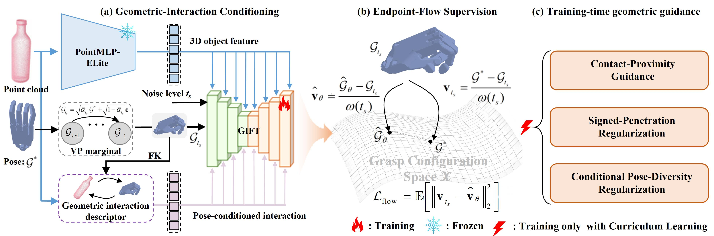
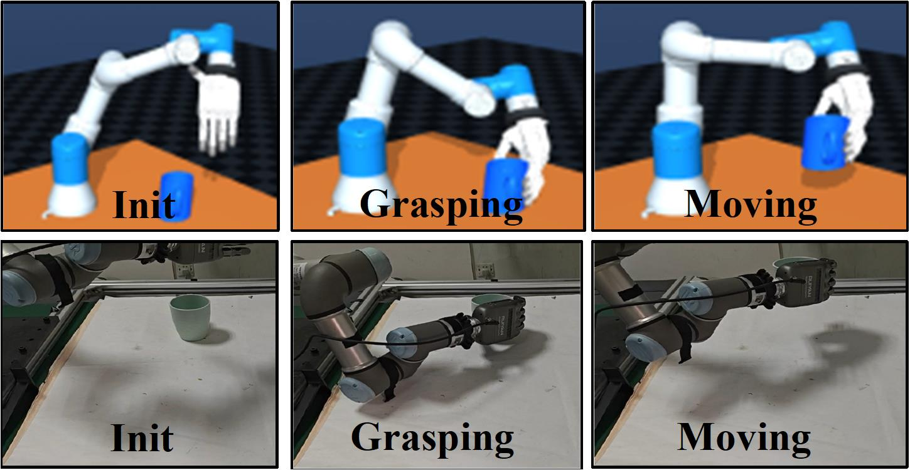
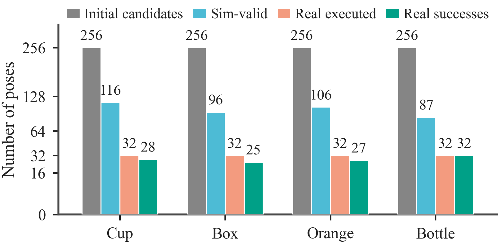

Supplementary material for double-anonymous review
GIFT: Geometric Interaction Conditioned Flow
Transformer for Efficient Dexterous Grasp Generation
Abstract
GIFT is a lightweight Geometric Interaction Conditioned Flow Transformer for efficient dexterous grasp generation. It couples object geometry and the noisy grasp state through a pose-conditioned geometric interaction descriptor and a Multi-Condition Fusion Block. Grasp generation is formulated as an endpoint-parameterized cumulative flow process. Contact-proximity guidance, signed-penetration regularization, and conditional pose-diversity regularization are introduced progressively through curriculum learning to improve geometric plausibility while preserving generation efficiency.

Quantitative and physical evidence
Supplementary evidence for the review
Table II
Comparison with representative grasp generators
Results are reported separately on DexGraspNet, UniDexGrasp, MultiDex, RealDex, and DexGRAB. The expanded view keeps Suc.6, Suc.1, penetration (Pen.), and diversity (Div.) visible for every dataset together with the five-dataset average.
| Method | DexGraspNet | UniDexGrasp | MultiDex | RealDex | DexGRAB | Avg. | ||||||||||||||||||
|---|---|---|---|---|---|---|---|---|---|---|---|---|---|---|---|---|---|---|---|---|---|---|---|---|
| Suc.6 | Suc.1 | Pen. | Div. | Suc.6 | Suc.1 | Pen. | Div. | Suc.6 | Suc.1 | Pen. | Div. | Suc.6 | Suc.1 | Pen. | Div. | Suc.6 | Suc.1 | Pen. | Div. | Suc.6 | Suc.1 | Pen. | Div. | |
| NFE not reported for these baseline methods | ||||||||||||||||||||||||
| UniDexGrasp | 33.9 | 70.1 | 31.9 | 0.14 | 23.7 | 65.5 | 24.5 | 0.14 | 21.6 | 47.5 | 13.5 | 0.08 | 27.7 | 59.4 | 39.0 | 0.11 | 20.8 | 55.8 | 37.4 | 0.08 | 25.5 | 59.7 | 29.3 | 0.11 |
| GraspTTA | 18.6 | 67.8 | 24.5 | 0.13 | 21.0 | 65.3 | 21.2 | 0.10 | 30.3 | 62.8 | 19.0 | 0.11 | 13.3 | 46.4 | 40.1 | 0.09 | 14.4 | 51.0 | 51.4 | 0.10 | 19.5 | 58.7 | 31.2 | 0.11 |
| SceneDiffuser | 26.6 | 66.9 | 31.0 | 0.15 | 28.3 | 74.8 | 25.1 | 0.15 | 69.8 | 85.6 | 14.6 | 0.27 | 21.7 | 56.1 | 42.0 | 0.09 | 39.1 | 85.0 | 41.1 | 0.11 | 37.1 | 73.7 | 30.8 | 0.15 |
| UGG | 46.9 | 79.0 | 25.2 | 0.14 | 46.0 | 83.2 | 24.5 | 0.14 | 55.3 | 93.4 | 10.3 | 0.12 | 32.7 | 63.4 | 34.4 | 0.09 | 42.7 | 90.6 | 33.2 | 0.12 | 44.7 | 81.9 | 25.5 | 0.12 |
| NFE = 100 | ||||||||||||||||||||||||
| DGA | 53.6 | 90.4 | 21.5 | 0.22 | 54.8 | 90.8 | 18.9 | 0.25 | 72.2 | 96.3 | 9.6 | 0.23 | 34.6 | 71.2 | 23.1 | 0.14 | 56.5 | 91.8 | 28.6 | 0.12 | 54.3 | 88.1 | 20.3 | 0.19 |
| DGA (DDPM) | 47.1 | 83.3 | 20.4 | 0.15 | 46.6 | 88.6 | 17.1 | 0.15 | 60.6 | 93.4 | 11.0 | 0.21 | 22.0 | 51.6 | 32.2 | 0.10 | 42.7 | 86.9 | 19.8 | 0.11 | 43.8 | 80.8 | 20.1 | 0.14 |
| DGA (Flow Matching) | 57.7 | 89.9 | 18.6 | 0.14 | 54.6 | 89.8 | 19.0 | 0.13 | 51.6 | 90.6 | 14.0 | 0.25 | 13.0 | 37.5 | 34.7 | 0.10 | 39.8 | 79.4 | 19.1 | 0.13 | 43.3 | 77.4 | 21.1 | 0.15 |
| EFF-Grasp | 67.2 | 91.2 | 20.7 | 0.16 | 68.0 | 92.6 | 19.3 | 0.15 | 77.5 | 97.5 | 10.5 | 0.13 | 41.0 | 74.2 | 21.9 | 0.10 | 61.3 | 91.9 | 23.6 | 0.11 | 63.0 | 89.5 | 19.2 | 0.13 |
| GIFT | 62.1 | 87.8 | 19.0 | 0.20 | 64.1 | 90.2 | 18.0 | 0.23 | 86.3 | 97.8 | 13.5 | 0.21 | 54.1 | 79.0 | 26.2 | 0.17 | 61.5 | 89.6 | 23.8 | 0.12 | 65.6 | 88.9 | 20.1 | 0.19 |
| NFE = 1 | ||||||||||||||||||||||||
| DGA (MeanFlow) | 55.7 | 89.9 | 20.9 | 0.10 | 30.7 | 84.8 | 17.4 | 0.12 | 42.8 | 89.4 | 12.8 | 0.22 | 14.8 | 36.7 | 32.9 | 0.08 | 42.9 | 81.9 | 23.0 | 0.10 | 37.4 | 76.5 | 21.4 | 0.12 |
| GIFT | 61.0 | 90.7 | 20.9 | 0.07 | 62.8 | 91.9 | 18.5 | 0.07 | 66.6 | 92.5 | 14.6 | 0.16 | 45.3 | 75.0 | 30.0 | 0.10 | 54.6 | 93.3 | 24.6 | 0.09 | 58.1 | 88.7 | 21.7 | 0.10 |
Interpretation. At NFE = 100, GIFT reports the highest average Suc.6 in this comparison (65.6%), an 11.3-point improvement over DGA. It also obtains the highest Suc.6 on MultiDex, RealDex, and DexGRAB. With a single predictor evaluation (NFE = 1), GIFT retains 58.1% average Suc.6, 20.7 points above DGA (MeanFlow), indicating that the endpoint formulation remains effective under a substantially reduced evaluation budget.
Table V
Quality–efficiency trade-off under reduced NFE
These results use the same trained GIFT model; only the number of endpoint-predictor evaluations during reverse generation is changed.
| NFE | MultiDex | RealDex | ||||||||
|---|---|---|---|---|---|---|---|---|---|---|
| Suc.6 ↑ | Suc.1 ↑ | Pen. ↓ | Div. ↑ | FPS ↑ | Suc.6 ↑ | Suc.1 ↑ | Pen. ↓ | Div. ↑ | FPS ↑ | |
| 100 | 86.3 | 97.8 | 13.5 | 0.21 | 6.3 | 54.1 | 79.0 | 26.2 | 0.17 | 6.3 |
| 80 | 84.1 | 96.6 | 16.9 | 0.19 | 7.8 | 52.6 | 77.0 | 26.1 | 0.19 | 7.8 |
| 60 | 77.5 | 96.6 | 19.1 | 0.20 | 10.4 | 50.8 | 76.6 | 26.4 | 0.20 | 10.4 |
| 40 | 78.8 | 93.1 | 20.1 | 0.18 | 15.6 | 50.8 | 74.7 | 26.1 | 0.22 | 15.6 |
| 20 | 62.5 | 83.1 | 18.7 | 0.23 | 31.3 | 50.0 | 72.2 | 27.9 | 0.26 | 31.3 |
| 1 | 66.6 | 92.5 | 14.6 | 0.16 | 625 | 45.3 | 75.0 | 30.0 | 0.10 | 625 |
Interpretation. Reducing NFE increases throughput from 6.3 to 625 poses/s. The success metrics are not strictly monotonic with NFE; at NFE = 1, GIFT still reports 66.6% Suc.6 on MultiDex and 45.3% on RealDex. This highlights the practical quality–efficiency trade-off rather than implying that one NFE setting is uniformly optimal.
Physical evaluation protocol
From RGB-D observation to physical transport
The physical evaluation follows a sim-to-real protocol: object geometry is reconstructed from RGB-D observations, 256 candidate grasps are generated per object, simulation-valid candidates are filtered, and 32 candidates are randomly selected for execution on the robot.
- ObserveRGB-D input from a RealSense D435
- ReconstructComplete object geometry with SPAR3D
- Generate256 GIFT candidates per object
- FilterSimulation-based validity checking
- Execute32 randomly selected valid poses


Representative physical executions
Object-level execution clips
Each clip shows one of the four household objects evaluated in the sim-to-real study. Playback is user-controlled and muted by default; the counts below report successful executions out of 32 trials per object.